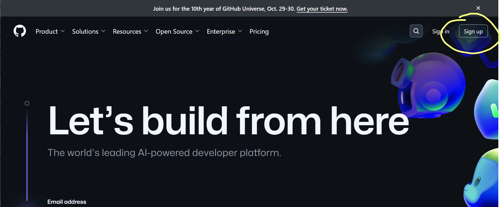
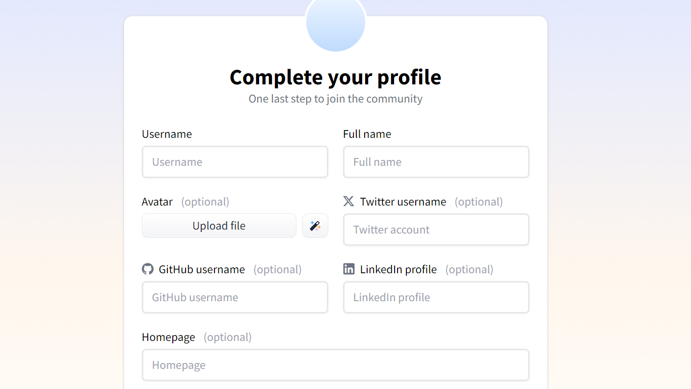

Anleitung: GitHub und Hugging Face Anmeldung
1. GitHub Anmeldung
- Öffnen Sie die GitHub-Website: https://github.com
- Klicken Sie auf "Sign up" (Registrieren) in der oberen rechten Ecke.

- Geben Sie Ihre Uni E-Mail-Adresse ein.
- Erstellen Sie ein Passwort und wählen Sie einen Benutzernamen.
- Lösen Sie das Captcha, um zu bestätigen, dass Sie kein Roboter sind.
- Klicken Sie auf "Create account" (Konto erstellen).
- Verifizieren Sie Ihre E-Mail-Adresse durch Eingabe des zugesandten Codes.
- Wählen Sie Ihren Plan (kostenlos).
- Ihr GitHub-Konto ist nun erstellt und einsatzbereit.
2. Hugging Face Anmeldung mit GitHub-Account
- Besuchen Sie die Hugging Face-Website: https://huggingface.co
- Klicken Sie auf "Sign up" (Registrieren) in der oberen rechten Ecke.
li>Auf der Anmeldeseite sehen Sie ein Formular mit den folgenden Feldern:
- Email Address (E-Mail-Adresse)
- Password (Passwort)
- Klicken Sie auf den "Next" (Weiter) Button.
- Vervollständigen Sie Ihren Account. Sie können den Account auch mit GitHub verbinden, geben Sie dafür Ihren GitHub Benutzernamen ein.

- Nach Abschluss des Anmeldeprozesses können Sie sich mit Ihrer E-Mail-Adresse und Ihrem Passwort bei Hugging Face einloggen.
3. Token-Erstellung auf Hugging Face
Um ein Token für die Unterstützung von LLaMA 3.1 70B zu erhalten:
- Loggen Sie sich in Ihr Hugging Face-Konto ein.
- Klicken Sie auf Ihren Profilnamen in der oberen rechten Ecke und wählen Sie "Settings" (Einstellungen).
- Wählen Sie im linken Menü "Access Tokens" (Zugangstoken).
- Klicken Sie auf "New token" (Neues Token).
- Geben Sie einen Namen für Ihr Token ein und wählen Sie die gewünschten Berechtigungen.
- Klicken Sie auf "Create" (Erstellen).
- Kopieren Sie das generierte Token und bewahren Sie es sicher auf. Es wird nur einmal angezeigt.
Hinweis: Um Zugriff auf LLaMA 3.1 70B zu erhalten, müssen Sie möglicherweise zusätzliche Schritte durchführen, wie z.B. eine Anfrage für Zugang zu stellen oder bestimmte Nutzungsbedingungen zu akzeptieren. Überprüfen Sie die spezifischen Anforderungen für LLaMA 3.1 70B auf der Hugging Face-Plattform.